PACC
Introduction
In a recent interview, Anne Carson points to the risks of reducing works of theater to moralizing objects and object lessons: ‘[W]orks of art don’t have a message, do they? They offer an experience and possibly a transformation.” How do the multifold adaptations of literature across the material book, illustration, and digital text shape the experience of readers? How specifically do performances function as imagined spaces where communities both ancient and contemporary can reflect on the social realities of human experience through myriad forms? Can the liveness of performance retain its precious salience in a world of social media and polemical sound bites? What can theater reveal to its audiences about the dissemination of information, artistic consumption and production?
In a collaboration involving poet, playwright, professor and author Anne Carson, visual artist Robert Currie, Haverford College faculty members Laura McGrane and Deborah Roberts and Philadelphia-based theater company Lightning Rod Special, this PACC initiative ‘Play, Media Text: Making it Live’ will contemplate what the performances of the past have to say about the future of performance. Working with texts from the classical period and eighteenth century through the contemporary moment, our project will culminate with an immersive, theatrical reading of Carson’s never-produced play KRAPP Hour. How does this piece encourage its audiences to reconsider how they get information, how it is made and disseminated, who fills the airwaves and talk shows, and why should we trust any of it? Throughout the collaborative, students and community members will inhabit theater as adaptive social practice through workshops, readings and live performances.
Collaborators
Events
Lightning Rod Special: Scott R. Sheppard and Alice York, Co-Directors
Non-Profit Partner
1.22~
Philadelphia, Pennsylvania
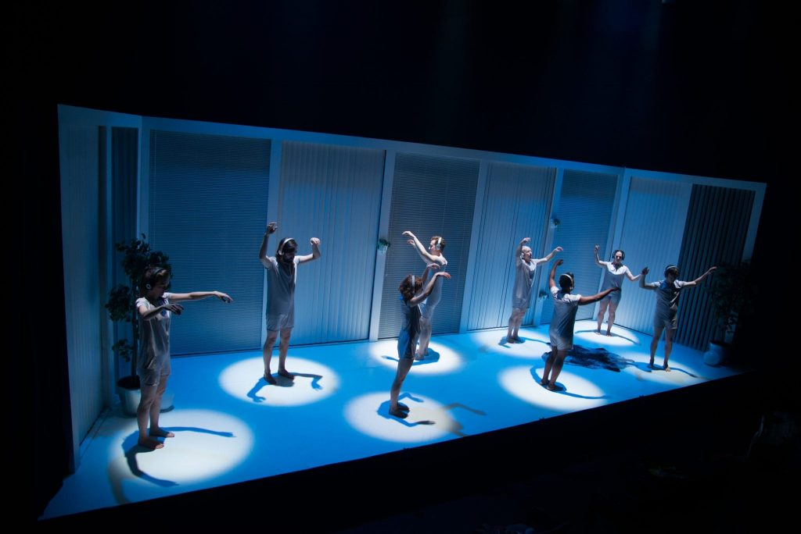
Lightning Rod Special is a Philadelphia-based original performance company that creates raucous and contemplative works to ask questions of ourselves, our audience, and the world at large. Our work engages a highly collaborative, actor-driven approach; LRS creations are finely crafted extensions of the raw and thunderous discoveries born from spontaneous inspiration.
Like scientists, we start each project with a hypothesis and, following artistic investigations, find our way to completed pieces of theatre that twist the ordinary into the alien, provoke debate, and stir what lies dormant in the corners of an audience’s mind. With big hearts, we tackle lightning rod topics in ways that scramble theatrical conventions and intellectual assumptions.
Exploding complex questions with precision and play, Lightning Rod Special makes live performance from the ground up.
Read lessAnne Carson & Robert Currie, Lead Artists
Artists in Residence
1.22~

Refashioning the Classics: Dramatization and Illustration Course Visit w/ Anne Carson and Robert Currie, Lead Artists
Course Visit
2.11
2:15-3:45pm, Haverford College, VCAM 201
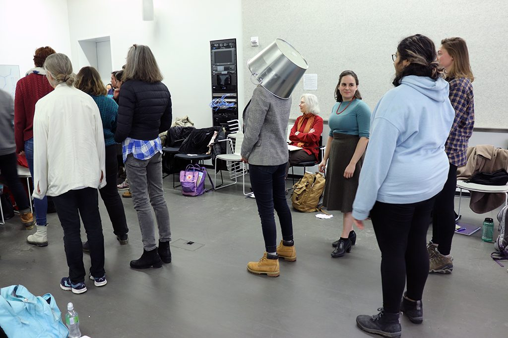
Poets & artists Anne Carson and Robert Currie took over Deborah Robert’s course ‘Refashioning the Classics: Dramatization and Illustration’. Anne and Currie posed a series of prompts for the students including an exercise in making 10 drawings and then creating a movement or a sound that expresses that drawing and a small group assignment to perform something both inside/outside a boundary.
Read lessSometimes It's Necessary to State the Obvious w/ Anne Carson and Robert Currie
Reading & Performance
2.12
7:30-9pm, Haverford College, Sharpless Auditorium
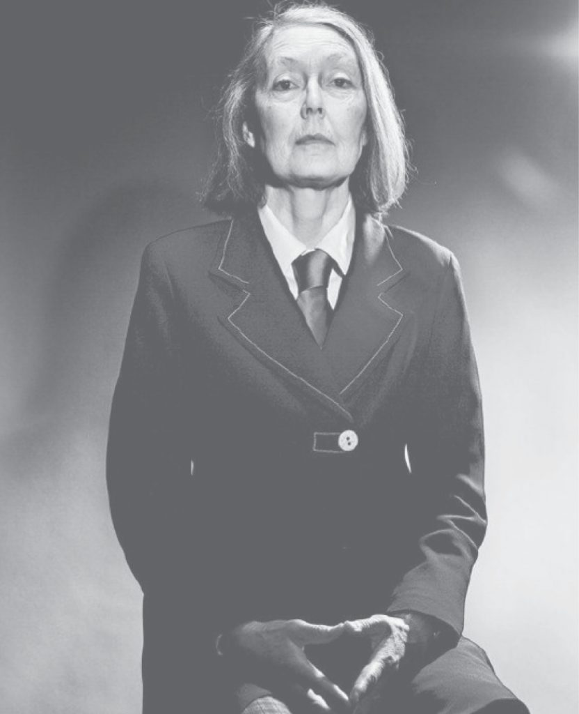
Sometimes It’s Necessary To State the Obvious
Tuesday, February 12th
7:30 – 9pm
Sharpless Auditorium, Haverford College, 370 Lancaster Avenue
Free and open to the public.
Join us for a reading by Anne Carson — poet, essayist, translator and classicist. Her recent body of work includes NOX, Antigonick, Red Doc>, and Float.
Read lessWhy Theater Should Be Dangerous w/ Lightning Rod Special
Presentation & Discussion
2.22
12-1:00pm, Haverford College, VCAM Lounge & Community Kitchen
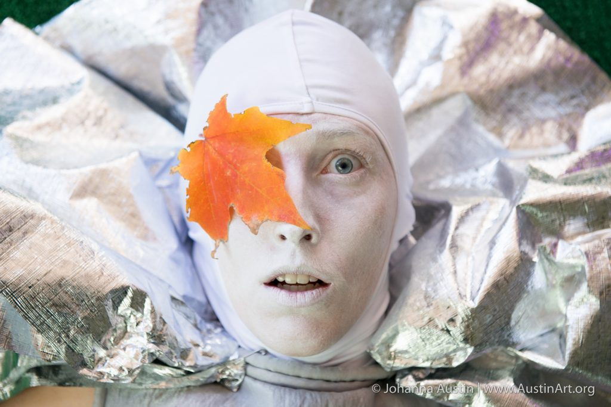
Lightning Rod Special: Why Theater Should be Dangerous
Friday, February 22
12-1pm
VCAM Community Kitchen
Lightning Rod Special makes a case that theater should be revitalizing our democracy through provocation and complexity. Part discussion, part rehearsal, part communal meditation: witness how Lightning Rod Special asks dangerous questions through a radical practice of devising original theater. They will demonstrate creation methods and have an open conversation about how they approach new performance work. Lightning Rod Special company members are Barrymore and OBIE Award-winning artists who have toured their work all over the world. Known most recently for Underground Railroad Game which was named by the New York Times as one of the top 25 plays in the past 25 years.
This event is free and open to the public, lunch provided.
Crosslisted = Students, faculty, staff, and guests talking about research, the arts, humanities, and anything else in an informal setting. Contact: Stephanie Bursese.
Read lessTopics in 18th-century Literature Course Visit w/ Lightning Rod Special, Nonprofit Organization
Course Visit
2.27
1:30-4pm, Haverford College, Woodside Meditation Room
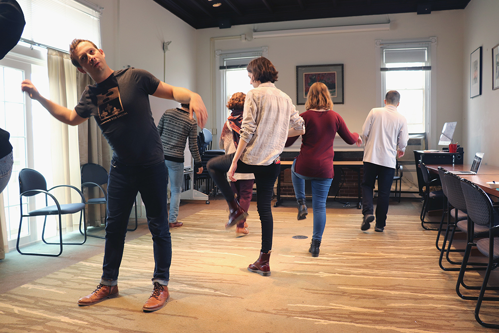
Scott R. Sheppard and Alice Yorke, co-founders of Lightning Rod Special, led a movement workshop for students in Laura McGrane’s course ‘Topics in 18th-century Literature: New(s) Media, Performance and Print Culture’. The students experienced a slice of LRS’ creative process, learning to move like a puppet and “not acting” in a scene LRS call a “re-do”.
Read less"Lecture on the History of Skywriting" w/ Anne Carson, Robert Currie, Lead Artists, & Faisal bin Ali Jaber
Performance
3.6
7-8:30pm, Christ Church Neighborhood House, 20 N American St, Philadelphia
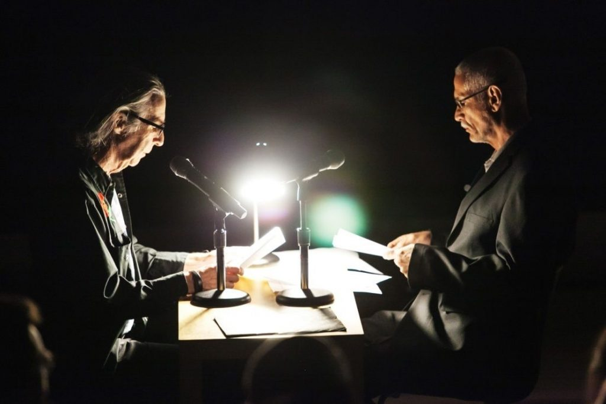
Anne Carson will perform a ‘Lecture on the History of Skywriting’ with her collaborator Robert Currie and Faisal bin Ali Jaber, an engineer from Yemen whose brother-in-law and nephew were killed by a U.S. drone strike in 2012.
The performance will last roughly 45 minutes with no intermission and be followed by a Q & A session with Anne Carson, Robert Currie and Shelby Sullivan-Bennis, her biography below.
This event is free and open to the public. Image by Andrew Kist.
Shelby Sullivan-Bennis is a Senior Staff Attorney at Reprieve U.S., working on abuses in counter-terrorism and other national security concerns. She represents several prisoners currently held without trial or charge at Guantánamo Bay, as well as multiple victims of America’s overseas targeted killing program. Shelby has previously worked as criminal defense counsel in terrorism cases being litigated in the Southern District of New York – notably, that of Nazih al Raghie (“Anas al-Liby”), a Libyan national extra-judicially rendered to the United States to stand trial for charges relating to the 1998 U.S. Embassy bombings in Kenya and Tanzania. She has also worked for the Legal Aid Society (state criminal law issues), the International Rescue Committee (immigration cases), and as pre-indictment defense counsel for Creating Law Enforcement Accountability and Responsibility (CLEAR), at the CUNY School of Law. She holds a B.A. from the University of Rhode Island and a J.D. from the City University of New York School of Law. She is admitted in New York and to the U.S. District Court for the District of Columbia and Southern District of New York. Shelby is a Member of the American Bar Association, the New York City Bar Association (and its Committees on Capital Punishment and International Human Rights), and the National Lawyers Guild.
Read lessTopics in 18th-century Literature: New(s) Media, Performance and Print Culture Course Visit w/ Anne Carson and Robert Currie, Lead Artists
Course Visit
3.6
1:30-4:00pm, Haverford College, Woodside Meditation Room
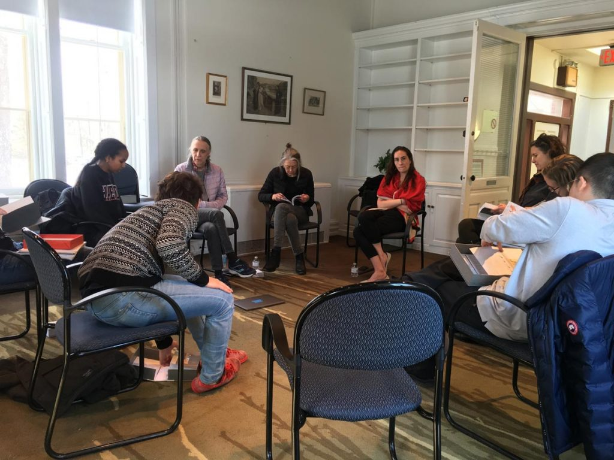
Lead artists and poets Anne Carson and Robert Currie visited professor Laura McGrane’s course “Topics in 18th-century Literature: New(s) Media, Performance and Print Culture”. During the visit, Carson and Currie engaged the students in a discussion about publishing: both the technical process, the creative process.
They also brought along original letterpress and silkscreen prints of their books for students to hold and flip through, along with their finished public works to give the students a sense of the contrast between the published, trade version of a book, and the original, rough version.
Read less"The Appointment" Original Screenplay written and performed by Lightning Rod Special
Field Trip
3.30
8:00-9:30pm, Fringe Arts, 140 N Christopher Columbus Blvd, Philadelphia
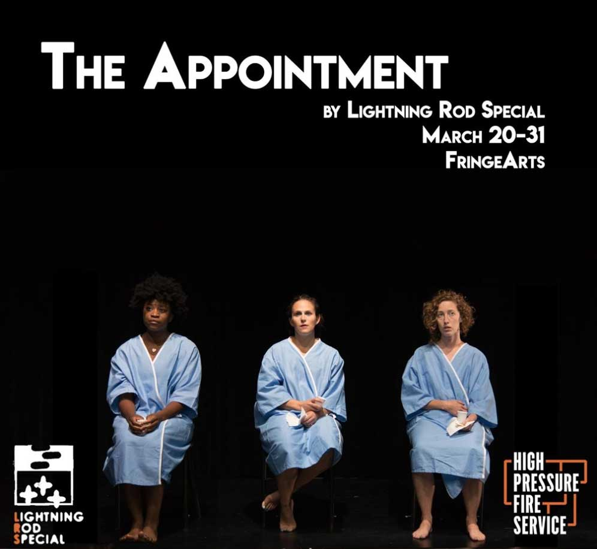
Laura McGrane’s course “Topics in 18th-century Literature: New(s) Media, Performance and Print Culture” traveled to Fringe Arts to watch the performance. After the show, the students were invited backstage to talk with LRS’ co-creater and lead artist, Alice Yorke, about their initial reactions and experiences.
The Appointment is a musical satire about the American abortion debate. Associated risks include dizziness, cramping, choreographed musical numbers, emotionally manipulative informed consent handbooks, God’s wrath, and rampant misogyny.
Side effects will last for the foreseeable future. Don’t worry. That’s perfectly normal.
A dark satire with original music, The Appointment examines the misogyny, hypocrisy, and absurdity of the contemporary abortion debate in America. The work unpacks the economic, societal, and political systems that disempower groups of people from making informed reproductive decisions.
In 2019, Lightning Rod Special presented a rolling two-city presentation of The Appointment, our musical satire about the American abortion debate. In February, we presented the piece at Philadelphia’s FringeArts for a two-week run.
The piece was eventually nominated for an astounding seven Barrymore-nominations (including Best Musical) with Brett Robinson taking home a win for Outstanding Supporting Actor. All performances in Philly and New York were accompanied by opportunities for audiences to learn more about local reproductive rights efforts. We partnered in Philly with Women’s Medical Fund, Allentown Women’s Center, and Councilmember Helen Gym to give audiences direct, actionable suggestions for how to be involved. At a LongTable panel, audiences got to hear from and ask questions of people working at the local, regional, and national level in the fight for abortion rights. Audiences were also able to participate in a Crafternoon and a late-night Sex Ed Trivia Night, hosted by Dr. Timaree Leigh. New York audiences were connected with local organizations, WHARR, Pro-Truth, NYAAF, and Abortion AF.
Topics in 18th-century Literature: New(s) Media, Performance and Print Culture & Refashioning the Classics: Dramatization and Illustration Course Visit w/ Lightning Rod Special, Non-Profit Partners
Course Visit
4.3
2:15-3:45pm, Haverford College, VCAM Create Space 006
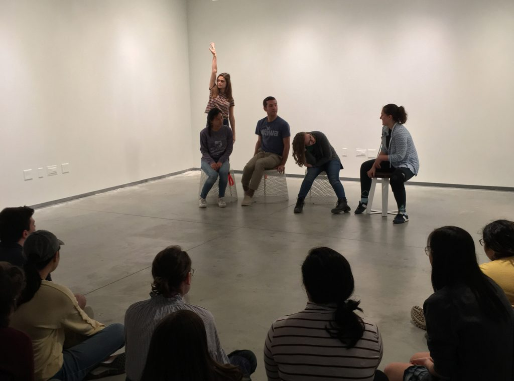
Actors Scott Sheppard and Alice Yorke shared their work and practice as members from the lead non-profit partner, Lightning Rod Special. This visit to professor Laura McGrane’s course “Topics in 18th-century Literature: New(s) Media, Performance and Print Culture” and professor Deborah Roberts’ course “Refashioning the Classics: Dramatization and Illustration” was a hands-on workshop to culminate the topics, theatrical practices, and methods covered in both courses over the semester.
In this collaborative workshop, students from both courses were brought to an empty gallery space within Haverford’s VCAM building. Students in different classes had learned slightly different theatrical methods from LRS’ previous visits, so it was time to contrast and compare different methods working towards the same narrative. LRS showed the students photos of animals (for example, an iguana) and the students were brought up in groups of four to create a short, non-verbal narrative – an improvised play – while LRS called out what was happening inside the scene.
Read lessKRAPP Hour
Performance
4.14
1:00-2:30pm & 4:00-5:30pm, Haverford College, VCAM
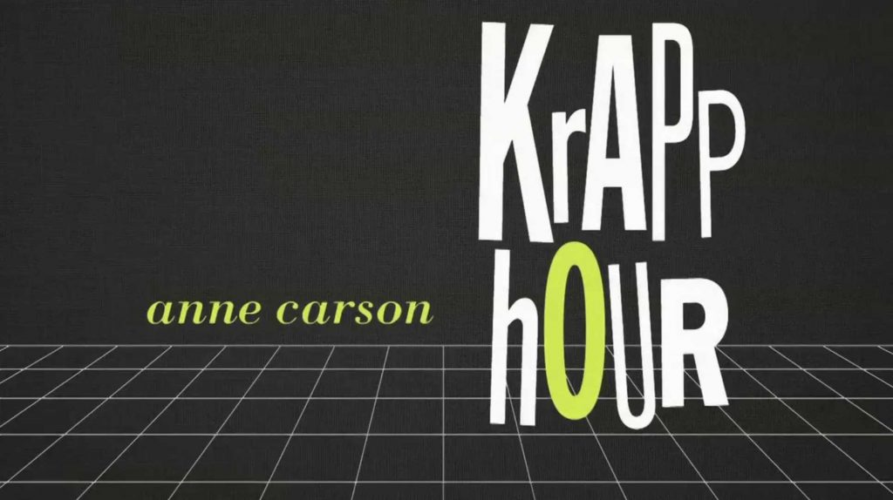
Witness and engage in a reading of Anne Carson’s KRAPP Hour, adapted and staged as a live performance by Lightning Rod Special at Haverford College in the new Visual, Culture, Arts, and Media (VCAM) building. In the first iteration of this never-produced play, originally published in Granta Magazine in 2014, Lightning Rod Special cracks open the world that KRAPP Hour dares us to imagine.
Read less"Norma Jeanne Baker of Troy" Original Text by Anne Carson, Commissioned by The Shed in NYC, and Performed by Ben Whishaw and Renée Fleming
Field Trip
4.28
3:00-4:30pm, The Shed NY, 545 W 30th St, New York, NY
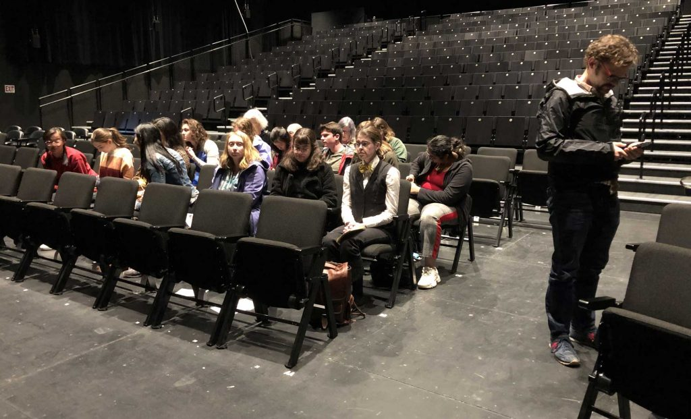
Haverford faculty, students, staff and partners traveled to The Shed on Sunday, April 28th to see Anne Carson’s new work Norma Jeane Baker of Troy Part opera, part theater, part performance piece, in Norma Jean Baker of Troy “Ben Whishaw and Renée Fleming star in a dramatic work by Anne Carson exploring the lives of two iconic beauties millennia apart”.
The Shed just opened along the High Line in NYC and has an ambitious directive, you can read more about it in the latest NYT piece here.
Read lessArchive